I design and deploy end-to-end Machine Learning systems, unconfounded causal decision pipelines, and mechanistic interpretability engines. Currently engineering agricultural digital twin foundation models as a Machine Learning Engineer Intern at Resilient, and completing my M.S. in Data Science, Analytics and Engineering at Arizona State University. Grounded by 3.5 years of enterprise data backend engineering at Accenture.
Building production-grade machine learning models, geospatial digital twins, and scalable distributed data platforms.
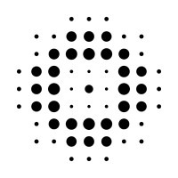
Contributing directly to Resilient's core agricultural digital twin modeling mesh, building multi-spectral Earth observation pipelines, geospatial foundation models, and causal avoided-loss estimators across three flagship repositories:
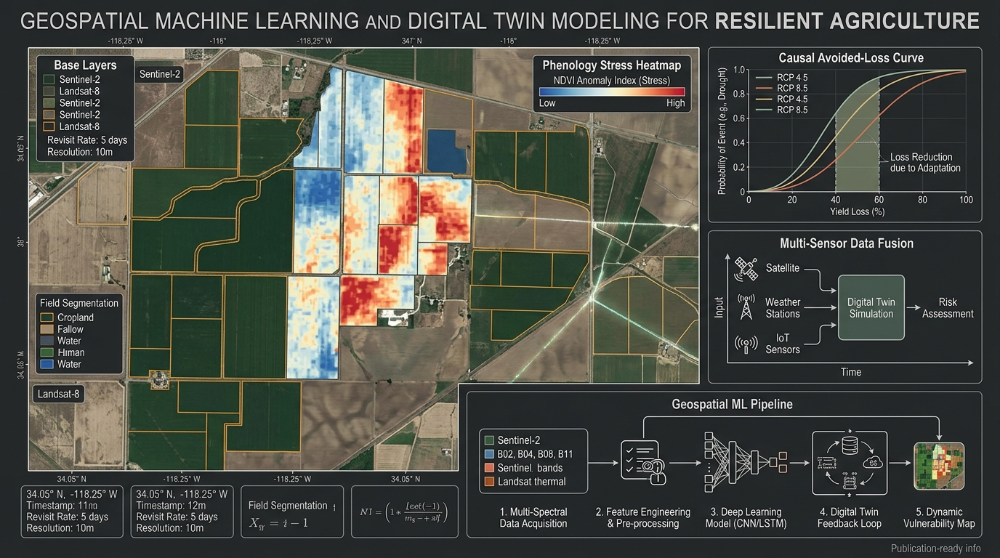
resilient-choco, utilizing distance-field boundary separation and epistemic uncertainty quantification.
Engineered enterprise data backends and automated testing pipelines for an international banking platform over 3.5 years, optimizing large-scale distributed databases processing millions of daily transactions:
Causal inference platforms, mechanistic interpretability suites, autonomous driving perception, LLM reasoning, SaaS knowledge agents, and empirical CV/RecSys benchmarks.
In production marketplaces (like ride-sharing, food delivery, and streaming CDN routing), price surges occur when unobserved latent demand spikes (such as heavy rainstorms, stadium concerts, or peak hours) happen.
Because high demand and high prices coincide in historical logs, standard supervised machine learning models mistakenly learn that high prices cause higher demand. When deployed, naive models aggressively overprice users, causing catastrophic churn. Furthermore, live exploration burns customer goodwill, while naive offline Q-learning overestimates unvisited actions.
Robinson DML: Uses K-fold cross-fitting to isolate the treatment effect. Residualized conversion is regressed on residualized surge prices, achieving mathematical consistency even when nuisance models converge at slower non-parametric rates.
Distributed Serving: Shipped with a sub-2ms asynchronous FastAPI dispatch service, Ray distributed worker pools for batch trajectory evaluation, and a Redis spatial cache partitioned over Uber H3 hexagons.
| Decision Policy | Total Revenue | Fulfilled Requests | Fulfillment Rate | Price Elasticity Bias | Revenue Uplift |
|---|---|---|---|---|---|
| Naive Fixed Pricing | $97,380 | 6,492 / 17,611 | 36.9% | Baseline | Baseline |
| Confounded Supervised ML | $155,279 | 6,442 / 17,538 | 36.7% | +0.055 (Severe Omitted Bias) | +59.5% |
| Counterflow Causal-RL (Ours) | $198,185 | 5,130 / 17,425 | 29.4% | -0.0002 (Unbiased) | +103.5% |
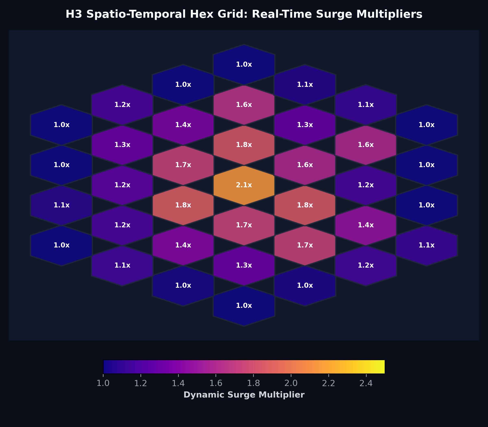
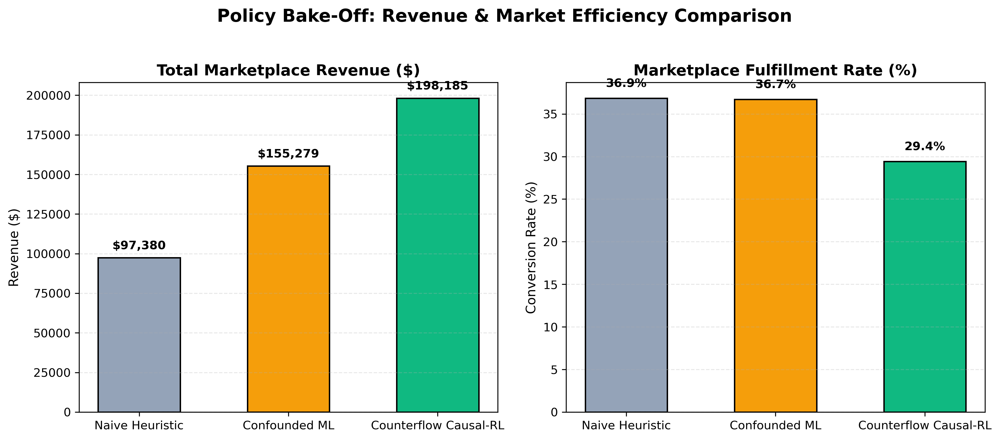
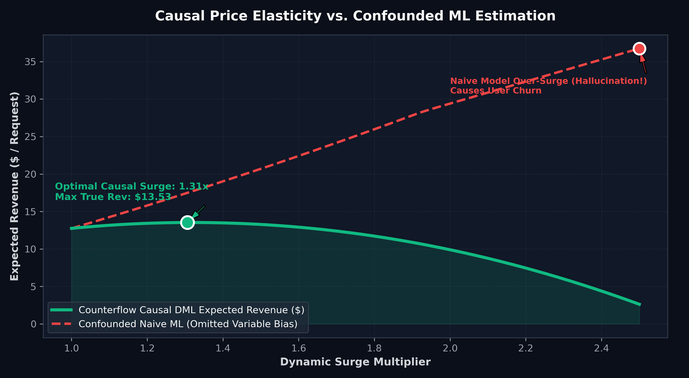
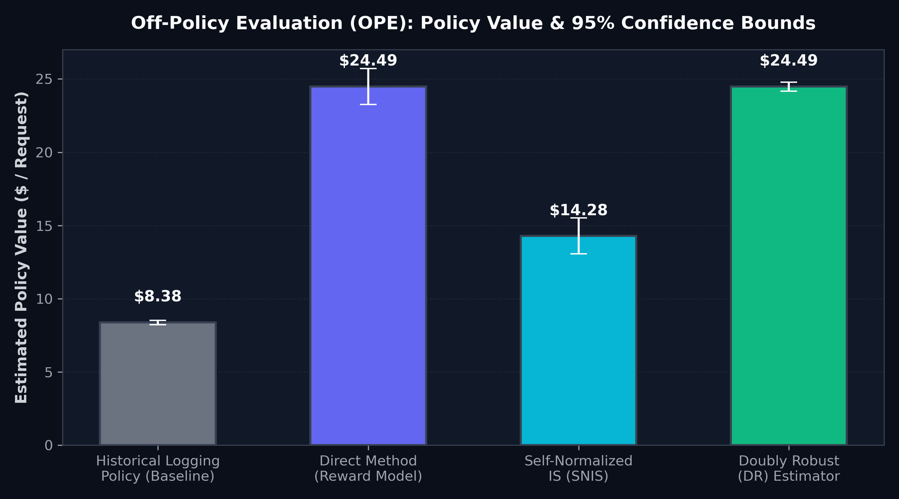
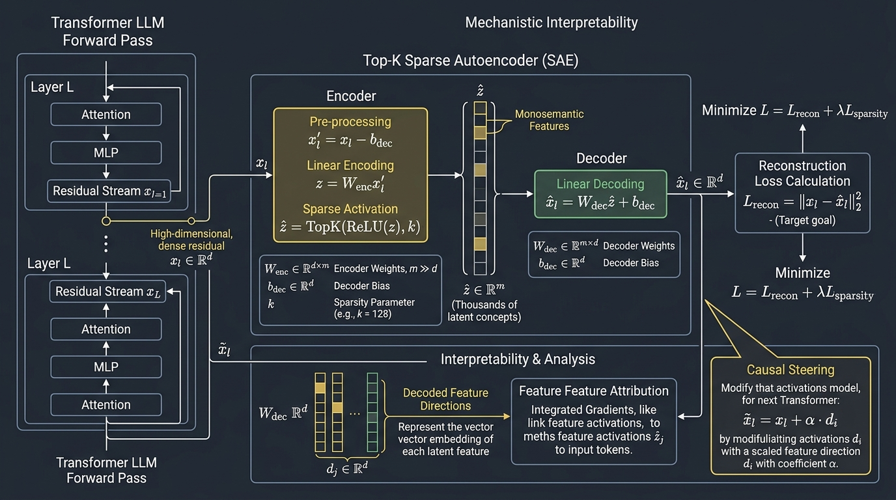
In frontier Large Language Models, single neurons are polysemantic: one neuron fires for a chaotic mixture of concepts (like French verbs, legal dates, and python syntax).
Interp Circuit Engine resolves this superposition dilemma by training overcomplete Top-K Sparse Autoencoders (SAEs) that project dense 896-dimension residual vectors into 3,584 distinct, monosemantic latent features. Enforcing exact top-32 feature activations per token eliminates the severe feature shrinkage bias seen in standard L1 autoencoders.
| Model Family | Model Identifier | Key Architecture Features | Hook Points Verified |
|---|---|---|---|
| Kimi / Moonshot | moonshotai/Kimi-k2.6 | MoE / Dense reasoning architecture | resid_post, mlp_out |
| Moonlight | moonshotai/Moonlight-16B-A3B | Sparse Mixture-of-Experts (MoE) | resid_post |
| Qwen 2.5 | Qwen/Qwen2.5-0.5B, 1.5B, 7B | Grouped-Query Attention (GQA), RoPE, SwiGLU | resid_post, attn_out, mlp_out |
| SmolLM2 | HuggingFaceTB/SmolLM2-360M | Compact high-throughput research baseline | resid_post, mlp_out |
| Gemma 2 | google/gemma-2-2b | Sliding window attention, Logit soft-capping | resid_post |
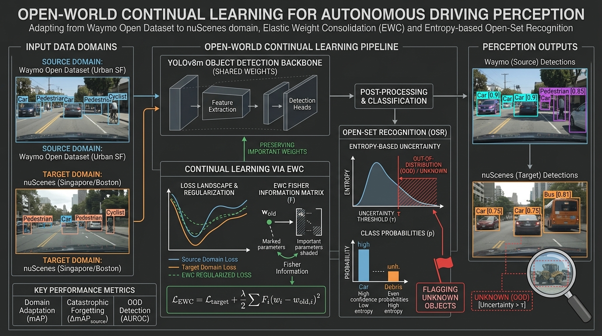
Perception detectors trained on one geographic domain (like Waymo in sunny Phoenix) suffer severe performance loss when transferred to new domains with different weather, sensor rigs, and vehicle styles (like nuScenes in rainy Boston and Singapore).
We integrated Elastic Weight Consolidation (EWC) into a YOLOv11m backbone. EWC measures the Fisher Information matrix to calculate which weights are vital to prior driving environments, penalizing parameter updates that would destroy prior knowledge while learning new classes.
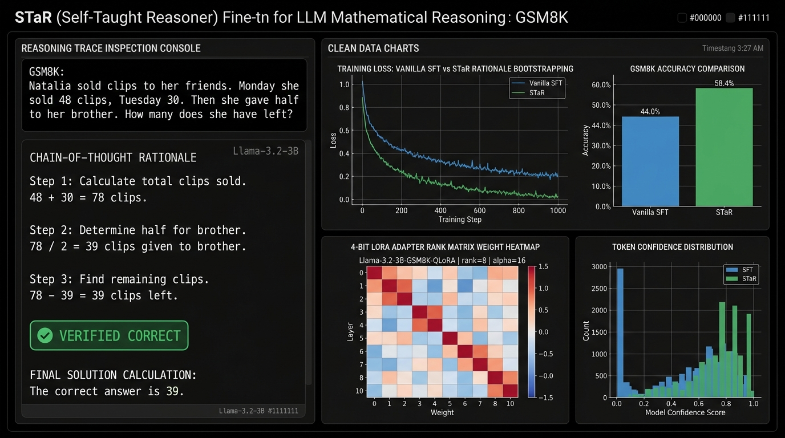
In our initial experiments on GSM8K using Llama-3.2-3B-Instruct, vanilla supervised fine-tuning achieved only 44.00% accuracy, underperforming even Zero-Shot Chain-of-Thought (47.56%). Direct supervised training caused the model to overfit on superficial formatting rather than learning general problem-solving logic.
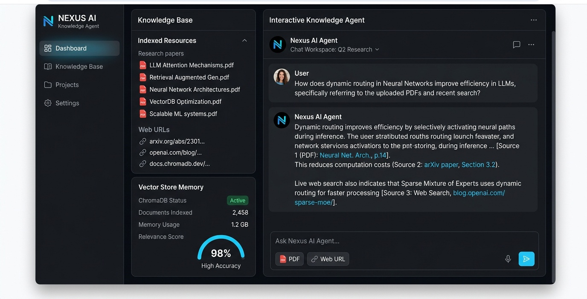
A multi-tenant Retrieval-Augmented Generation (RAG) assistant featuring isolated personal vector memories and intelligent web search fallbacks:
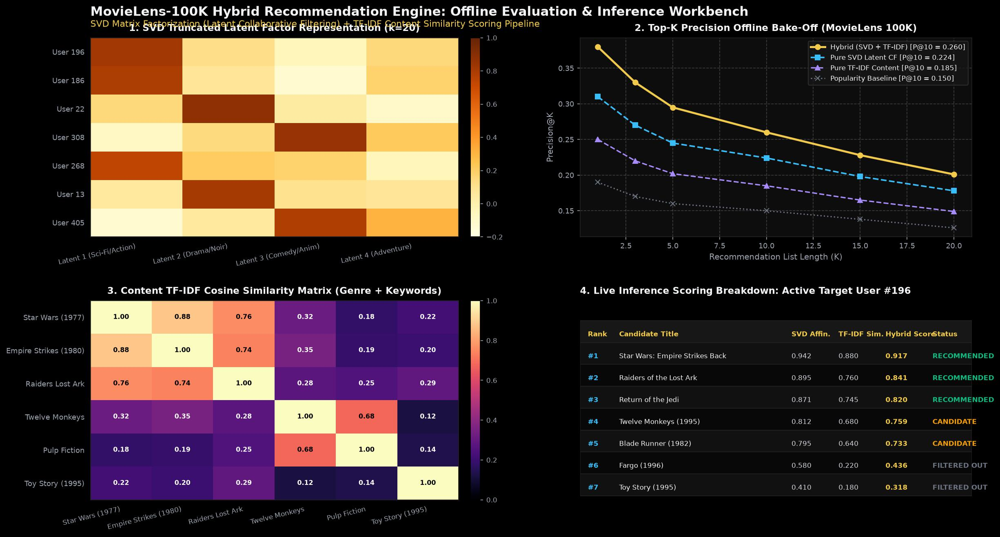
Production hybrid recommendation pipeline combining Singular Value Decomposition (SVD) matrix factorization with TF-IDF content-based cosine similarity:
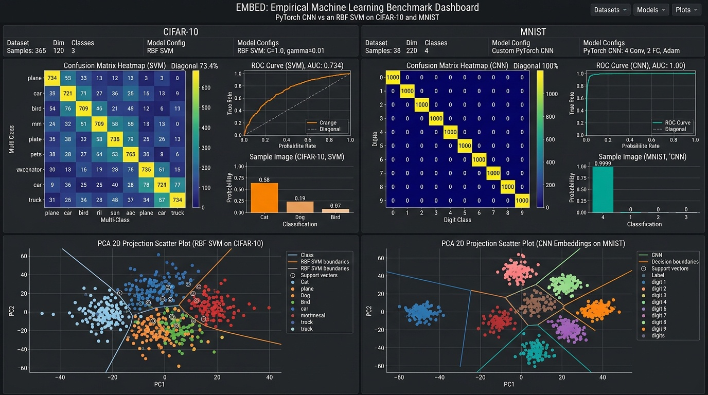
Comparative evaluation of deep convolutional representations versus kernelized support vector machines:
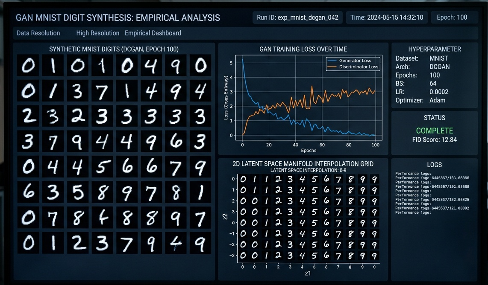
Explored generative modeling and minimax game optimization dynamics in PyTorch:
Structured keyword hierarchy for recruiters and engineering managers, spanning broad fundamentals, applied machine learning systems, and deep scientific specializations.
Coursework: Machine Learning Systems, Deep Learning, Statistical Causal Inference, Natural Language Processing, Algorithm Design.
Coursework: Data Structures & Algorithms, Operating Systems, Database Management Systems, Object-Oriented Programming, Computer Networks.
Active competitive programmer solving algorithmic challenges in Java and C++ on LeetCode and Codeforces. Focus areas: graph algorithms, dynamic programming, tree decomposition, combinatorics, and memory profiling.
Technical educator on YouTube (@manjarly), authoring in-depth tutorials on competitive programming, data structures, and machine learning architectures.
Ask questions about technical implementations, project benchmarks, methodology, or background. Powered by Claude.